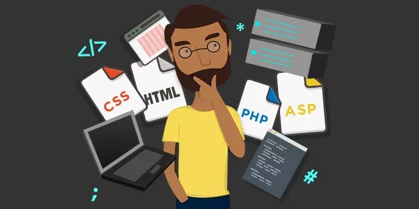
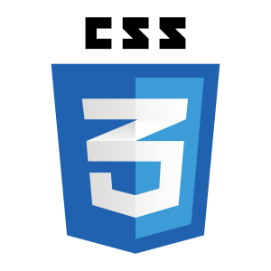
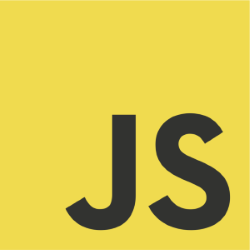
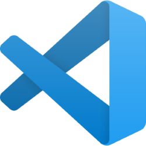
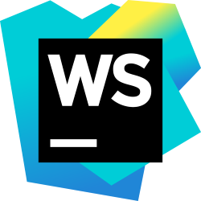
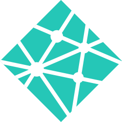

Desenvolvimento Web

Introdução ao desenvolvimento web
O desenvolvimento web é uma disciplina que engloba todas as atividades relacionadas à criação, construção e manutenção de sites e aplicações que são acessadas através da internet. Ele envolve a combinação de várias tecnologias, linguagens de programação e ferramentas para criar interfaces visuais interativas, garantir a funcionalidade correta e proporcionar uma experiência positiva aos usuários
No desenvolvimento web, existem duas principais categorias: o desenvolvimento front-end e o desenvolvimento back-end. O front-end refere-se à parte visível e interativa de um site ou aplicação, que os usuários veem e com a qual interagem diretamente. Envolve a utilização de linguagens como HTML (HyperText Markup Language) para estruturar o conteúdo, CSS (Cascading Style Sheets) para estilizar o layout e JavaScript para criar interatividade.
Por outro lado, o desenvolvimento back-end concentra-se nos bastidores do sistema, lidando com a lógica de negócios, processamento de dados e interações com bancos de dados. Nessa área, os desenvolvedores utilizam linguagens como PHP, Python, Ruby, Java, entre outras, para criar a funcionalidade do site ou aplicativo e gerenciar os dados.
O que é desenvolvimento web
Desenvolvimento web é o processo de criação, construção e manutenção de sites, aplicativos e outras soluções digitais que são acessadas através da internet. Envolve uma combinação de habilidades técnicas, design, programação e conhecimento das tecnologias relacionadas para produzir interfaces interativas e funcionais que os usuários podem acessar por meio de navegadores da web ou dispositivos conectados.
O que faz um desenvolvedor web
Um desenvolvedor web é um profissional responsável por projetar, criar, implementar e manter sites e aplicações web. Eles trabalham com várias tecnologias, linguagens de programação e ferramentas para garantir que os sites e aplicativos sejam funcionais, visualmente atraentes e eficientes. As responsabilidades de um desenvolvedor web podem variar dependendo da área específica em que eles se concentram, como front-end, back-end ou full-stack.
O que significa front-end e back-end
"Front-end" e "back-end" são termos usados para descrever as duas principais áreas do desenvolvimento de software, especialmente no contexto do desenvolvimento web. Eles se referem às partes visíveis e interativas (front-end) e à parte lógica e funcional (back-end) de uma aplicação ou sistema
-
Front-end:
O front-end, também conhecido como lado do cliente, é a parte da aplicação com a qual os usuários interagem diretamente. Isso inclui tudo o que é visível na interface do usuário, desde o design e layout até os elementos interativos.
-
Back-end:
O back-end, também conhecido como lado do servidor, é a parte da aplicação que não é visível para os usuários finais, mas que lida com a lógica de negócios, gerenciamento de dados, autenticação, segurança e outras funcionalidades necessárias para o funcionamento do sistema.
O que é desenvolvimento web full stack
O desenvolvimento web full stack refere-se à habilidade de um desenvolvedor de trabalhar tanto na parte do front-end quanto na parte do back-end de uma aplicação web. Um desenvolvedor full stack é capaz de lidar com todas as camadas da tecnologia envolvidas no desenvolvimento de um aplicativo, desde a interface de usuário até o gerenciamento de dados no servidor. Eles possuem conhecimento amplo e diversificado, o que lhes permite criar aplicativos completos e funcionais.
Ter habilidades full stack é vantajoso porque os desenvolvedores podem trabalhar em projetos de ponta a ponta e ter uma visão mais ampla do desenvolvimento. No entanto, também é importante reconhecer que o desenvolvimento full stack pode ser desafiador devido à natureza ampla do conhecimento necessário. Portanto, muitos desenvolvedores escolhem focar mais em uma área (front-end ou back-end) para aprofundar suas habilidades em um nível mais especializado.
As principais tecnologias de desenvolvimento web
As principais tecnologias de desenvolvimento web estão em constante evolução, mas algumas das tecnologias mais amplamente usadas e influentes incluem:
-
HTML (HyperText Markup Language):
A linguagem básica para criar a estrutura e o conteúdo de uma página web.
-
CSS (Cascading Style Sheets):
Utilizado para estilizar o layout e a aparência das páginas.
-
JavaScript:
A linguagem de programação que permite adicionar interatividade e dinamismo às páginas.
Resumo sobre HTML
HTML (HyperText Markup Language) é uma linguagem de marcação utilizada para criar a estrutura e o conteúdo de páginas da web. Ela fornece um conjunto de elementos e tags que permitem aos desenvolvedores definir a organização do conteúdo, como textos, imagens, links e outros elementos, dentro de um documento web.
Principais características do HTML:
-
Estruturação de Conteúdo:
O HTML é usado para definir a hierarquia e a organização do conteúdo em uma página, dividindo-o em títulos, parágrafos, listas, tabelas e muito mais.
-
Elementos e Tags:
Os elementos HTML são marcados com tags, que são cercadas por "<" e ">". As tags definem a função de cada elemento, como <p> para parágrafos, <img> para imagens e <a> para links.
-
Links e Navegação:
Os elementos de âncora (<a>) são usados para criar links entre diferentes páginas da web ou para outras partes da mesma página.
-
Imagens e Multimídia:
O HTML permite a incorporação de imagens (<img>) e conteúdo de mídia, como áudio e vídeo, para enriquecer a experiência do usuário.
-
Formulários:
Os formulários (<form>) são criados para coletar informações dos usuários, como em campos de entrada de texto, botões de rádio, caixas de seleção e botões de envio.
-
Semântica:
A semântica HTML permite atribuir significado ao conteúdo, indicando sua função e importância para mecanismos de busca e acessibilidade.
Resumo sobre CSS
CSS (Cascading Style Sheets) é uma linguagem de estilização utilizada em conjunto com HTML para definir a aparência visual e o layout de páginas da web. Em vez de lidar com a estrutura ou conteúdo, o CSS concentra-se exclusivamente em como os elementos HTML são apresentados aos usuários.
Principais características do CSS:
-
Estilização Visual:
O CSS permite controlar cores, fontes, tamanhos, espaçamentos, bordas e outros aspectos visuais dos elementos HTML.
-
Separação de Conteúdo e Estilo:
Uma das principais vantagens do CSS é a capacidade de separar o conteúdo (definido em HTML) da apresentação visual (definida em CSS). Isso torna o código mais organizado e manutenível.
-
Seletores e Propriedades:
O CSS opera usando seletores para escolher os elementos HTML aos quais as regras de estilo serão aplicadas. As propriedades CSS definem como esses elementos devem ser estilizados.
-
Classes e IDs:
Classes e IDs são atributos que podem ser aplicados a elementos HTML para associá-los a estilos específicos definidos no CSS.
-
Estilos em Cascata:
"Cascading" refere-se à maneira como os estilos são aplicados. Se vários estilos se aplicam a um elemento, o navegador segue uma ordem hierárquica para determinar qual estilo prevalecerá.
-
Responsividade:
O CSS é essencial para criar layouts responsivos, onde as páginas se adaptam automaticamente a diferentes tamanhos de tela e dispositivos.
Resumo sobre JavaScript
JavaScript é uma linguagem de programação amplamente utilizada no desenvolvimento web para adicionar interatividade, dinamismo e funcionalidade às páginas da web. Ela é executada no lado do cliente, ou seja, no navegador dos usuários, permitindo que ações e respostas ocorram sem a necessidade de recarregar toda a página.
Principais características do JavaScript:
-
Interatividade:
O JavaScript permite que os desenvolvedores criem elementos interativos em uma página web, como menus expansíveis, botões de alternância, formulários dinâmicos e muito mais.
-
Manipulação do DOM:
O DOM (Document Object Model) é uma representação da estrutura de uma página web. O JavaScript é usado para interagir e modificar elementos do DOM, alterando conteúdo, estilos e comportamentos.
-
Eventos:
O JavaScript permite que os desenvolvedores associem ações a eventos, como cliques, movimentos do mouse, pressionamentos de tecla e muito mais, para desencadear respostas específicas.
-
Requisições Assíncronas:
O JavaScript é usado para fazer requisições assíncronas a servidores, recuperando ou enviando dados sem interromper a experiência do usuário. Isso é frequentemente usado para carregar dados dinamicamente, como atualizações de redes sociais.
-
Bibliotecas e Frameworks:
Existem muitas bibliotecas e frameworks JavaScript populares, como jQuery, React, Angular e Vue.js, que oferecem soluções prontas para tarefas específicas e facilitam o desenvolvimento de aplicativos mais complexos.
-
Validação de Formulários:
O JavaScript pode ser usado para validar dados em formulários antes de serem enviados para o servidor, garantindo que os dados inseridos estejam corretos.
-
Manipulação de Dados:
Com JavaScript, é possível criar, modificar e processar dados em tempo real, o que é especialmente útil em aplicativos web que envolvem atualizações constantes.
-
Animações e Efeitos:
O JavaScript pode ser usado para criar animações, transições suaves e efeitos visuais para melhorar a experiência do usuário
Melhores editores de código
Existem muitos editores de código populares e altamente recomendados para o desenvolvimento web, cada um com suas próprias características e vantagens. A escolha do melhor editor depende das preferências pessoais e das necessidades específicas do desenvolvedor. Mas, alguns dos melhores editores de código amplamente usados no desenvolvimento web são:
-
Visual Studio Code (VS Code):
Desenvolvido pela Microsoft, o VS Code é um editor de código altamente popular e amplamente utilizado. Ele oferece uma ampla gama de extensões, uma interface amigável, suporte a depuração, integração Git e muitos recursos úteis para desenvolvedores web.
Acesse o VS Code aqui! -
Sublime Text:
Um editor de código rápido e leve que é elogiado por sua velocidade e simplicidade. Ele possui uma série de recursos personalizáveis, como atalhos de teclado personalizados e suporte a plugins.
Acesse o Sublime Text aqui! -
Atom:
Desenvolvido pela GitHub, o Atom é conhecido por ser altamente customizável. Ele suporta extensões que permitem aos usuários personalizar quase todos os aspectos do editor para se adequar às suas preferências.
Instale o Atom aqui! -
WebStorm:
Um ambiente de desenvolvimento integrado (IDE) da JetBrains, focado no desenvolvimento web. Ele oferece recursos avançados, como dicas de código inteligente, depuração integrada e suporte a diversas tecnologias web.
Acesse o WebStorm aqui! -
Brackets:
Desenvolvido pela Adobe, o Brackets é projetado especialmente para desenvolvimento web front-end. Ele possui um recurso chamado "Live Preview" que permite ver as alterações em tempo real no navegador.
Acesse o Brackets aqui!
Principais opções gratuitas para hospedagem de sites estáticos
Existem várias opções gratuitas para hospedagem de sites estáticos, que são ideais para sites simples, páginas pessoais, portfólios e projetos de pequena escala. A seguir estão algumas das principais opções:
-
GitHub Pages:
Oferece hospedagem gratuita para sites estáticos diretamente de repositórios do GitHub. É especialmente útil para projetos baseados em Git. Suporta domínios personalizados.
-
Netlify:
Uma plataforma de hospedagem com recursos avançados para implantação contínua, SSL gratuito, integração com repositórios Git e suporte a domínios personalizados.
-
Vercel (anteriormente Zeit)
Especializado em hospedagem de sites estáticos e projetos React, Vue.js, Next.js e outros. Oferece implantação instantânea e SSL gratuito.
-
Firebase Hosting:
Parte da plataforma Firebase da Google, é uma opção para hospedagem de sites estáticos com recursos como SSL gratuito, implantação rápida e integração com outras ferramentas Firebase.
-
Render:
Oferece hospedagem de sites estáticos com integração a repositórios Git, SSL gratuito e suporte a domínios personalizados.
Como iniciar a carreira de desenvolvimento web
Iniciar uma carreira no desenvolvimento web pode ser emocionante, mas também desafiador. A seguir estão algumas dicas para ajudá-lo a começar com sucesso:
-
Aprenda os Fundamentos:
Comece com HTML, CSS e JavaScript, os fundamentos essenciais do desenvolvimento web. Domine essas linguagens antes de avançar para tecnologias mais avançadas.
-
Defina Seus Objetivos:
Identifique que tipo de desenvolvedor você quer ser: front-end, back-end ou full stack? Isso ajudará a direcionar seus estudos e práticas.
-
Recursos de Aprendizado:
Utilize tutoriais online, cursos em plataformas como Udemy, Coursera, Codecademy, freeCodeCamp, MDN Web Docs e outros para aprender.
-
Projetos Práticos:
Aplique o que aprendeu criando projetos reais. Isso ajudará você a ganhar experiência prática e a construir um portfólio.
-
Portfólio:
Crie um portfólio online para mostrar seus projetos e habilidades aos potenciais empregadores. Isso é fundamental para conseguir seu primeiro emprego.
-
Versionamento:
Aprenda a usar sistemas de controle de versão, como Git, para rastrear e gerenciar seu código.
-
Networking:
Conecte-se com outros desenvolvedores nas redes sociais, fóruns, grupos locais de desenvolvimento e eventos de tecnologia.
-
Construa uma Presença Online:
Crie perfis em plataformas como LinkedIn e GitHub. Compartilhe seus projetos, aprendizados e insights.
-
Mentoria:
Busque mentores ou pessoas mais experientes na área. Eles podem oferecer orientação valiosa e compartilhar suas experiências.
-
Atualizações Constantes:
A tecnologia muda rapidamente. Esteja disposto a aprender constantemente e acompanhar as tendências do setor.
-
Resolva Problemas Reais:
Aprenda a solucionar problemas reais e a criar soluções eficazes para as necessidades dos usuários.
-
Participe de Projetos de Código Aberto:
Contribuir para projetos de código aberto é uma maneira excelente de ganhar experiência, aprender com outros desenvolvedores e construir um currículo sólido.
-
Seja Paciente:
A carreira no desenvolvimento web exige tempo e prática. Não desanime diante dos desafios.
-
Procure Oportunidades:
Comece procurando estágios, projetos freelance, trabalhos temporários ou contribuições voluntárias para ganhar experiência e construir sua carreira.
Lembre-se de que a jornada no desenvolvimento web é única para cada pessoa. Mantenha-se motivado, seja perseverante e continue aprendendo para construir uma carreira sólida e bem-sucedida.
Sobre mim
Meu nome é Arthur Gomes de Souza, tenho 18 anos, moro em Belo Horizonte - MG e sou estudante universitário, atualmente estou cursando Ciência da Computação - 2º período, na Dom Helder. Ainda não tenho experiência profissional, mas tenho alguns projetos pessoais no meu perfil do GitHub. Para mais informações entre em contato.